sync_containers¶
- auxjad.mutate.sync_containers(containers: Union[collections.abc.Iterable[abjad.score.Container], abjad.score.Score], *, use_multimeasure_rests: bool = True, adjust_last_time_signature: bool = True) → None[source]¶
Mutates two or more input containers in place and has no return value; this function finds the longest container among the inputs and adds rests to all the shorter ones, making them the same length. Input argument can be a single
abjad.Scorewith multiple containers, or an iterable with elements of typeabjad.Containeror child classes.- Basic usage:
Input two or more containers. This function will fill the shortest ones with rests ensuring all their lengths become the same.
>>> staff1 = abjad.Staff(r"\time 4/4 g'2.") >>> staff2 = abjad.Staff(r"\time 4/4 c'1") >>> abjad.show(staff1)
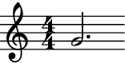>>> abjad.show(staff2)

>>> auxjad.mutate.sync_containers([staff1, staff2]) >>> abjad.show(staff1)
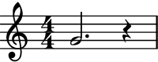>>> abjad.show(staff2)

Note
Auxjad automatically adds this function as an extension function to
abjad.mutate. It can thus be used from eitherauxjad.mutateorabjad.mutatenamespaces. Therefore, the two lines below are equivalent:>>> auxjad.mutate.sync_containers([container1, container2]) >>> abjad.mutate.sync_containers([container1, container2])
Note
When using
abjad.Container’s, all time signatures in the output will be commented out with%%%.This is because Abjad only applies time signatures to containers that belong to aabjad.Staff. The present function works with eitherabjad.Containerandabjad.Staff.>>> container = abjad.Container(r"\time 3/4 c'4 d'4 e'4") >>> abjad.show(container)

>>> staff = abjad.Staff([container]) >>> abjad.show(container)

- Containers of same size:
If all containers have the same size, no modification is applied.
>>> container1 = abjad.Staff(r"\time 3/4 g'2.") >>> container2 = abjad.Staff(r"\time 3/4 c'2.") >>> auxjad.mutate.sync_containers([container1, container2]) >>> abjad.show(container1)
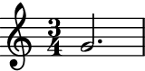>>> abjad.show(container2)
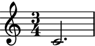- Underfull containers:
By default, this function closes the longest container by rewriting the time signature of its last measure if necessary (if it is underfull), and uses multi-measure rests whenever possible.
>>> container1 = abjad.Staff(r"\time 4/4 g'1 | f'4") >>> container2 = abjad.Staff(r"\time 4/4 c'1") >>> abjad.show(container1)

>>> abjad.show(container2)

>>> auxjad.mutate.sync_containers([container1, container2]) >>> abjad.show(container1)

>>> abjad.show(container2)
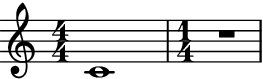adjust_last_time_signature:To allow containers to be left open (with underfull measures), set the keyword argument
adjust_last_time_signaturetoFalse.>>> container1 = abjad.Staff(r"\time 4/4 g'1 | f'4") >>> container2 = abjad.Staff(r"\time 4/4 c'1") >>> abjad.show(container1)

>>> abjad.show(container2)

>>> auxjad.mutate.sync_containers( ... [container1, container2], ... adjust_last_time_signature=False, ... ) >>> abjad.show(container1)

>>> abjad.show(container2)
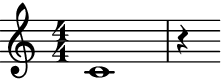use_multimeasure_rests:To disable multi-measure rests, set the keyword argument
use_multimeasure_reststoFalse.>>> container1 = abjad.Staff(r"\time 4/4 g'1 | f'4") >>> container2 = abjad.Staff(r"\time 4/4 c'1") >>> abjad.show(container1)

>>> abjad.show(container2)

>>> auxjad.mutate.sync_containers( ... [container1, container2], ... use_multimeasure_rests=False, ... ) >>> abjad.show(container1)

>>> abjad.show(container2)

- Adjusting last time signatures:
When adjusting the last time signature, this function will maintain the same time effective signature for as long as possible and only add a new one at the last measure if its duration is shorter.
>>> container1 = abjad.Staff(r"\time 7/4 a'1 ~ a'2.") >>> container2 = abjad.Staff(r"\time 3/4 c'2.") >>> abjad.show(container1)

>>> abjad.show(container2)

>>> auxjad.mutate.sync_containers([container1, container2]) >>> abjad.show(container1)
>>> abjad.show(container2)
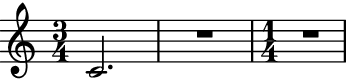- Multiple input containers:
This function can take an arbitrary number of containers.
>>> container1 = abjad.Staff(r"\time 4/4 c'1 | g'4") >>> container2 = abjad.Staff(r"\time 4/4 c'1 | g'2") >>> container3 = abjad.Staff(r"\time 4/4 c'1 | g'2.") >>> container4 = abjad.Staff(r"\time 4/4 c'1") >>> abjad.show(container1)
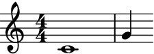>>> abjad.show(container2)
>>> abjad.show(container3)
>>> abjad.show(container4)
>>> containers = [container1, ... container2, ... container3, ... container4, ... ] >>> auxjad.mutate.sync_containers(containers) >>> abjad.show(container1)
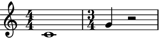>>> abjad.show(container2)

>>> abjad.show(container3)

>>> abjad.show(container4)

- Single input
abjad.Score: This function can also take a single
abjad.Scoreinstead of multipleabjad.Container’s orabjad.Staff’s.>>> staff1 = abjad.Staff(r"\time 3/8 c'4. | d'4") >>> staff2 = abjad.Staff(r"\time 3/8 c'4. | d'8") >>> staff3 = abjad.Staff(r"\time 3/8 c'4. | d'16") >>> staff4 = abjad.Staff(r"\time 3/8 c'4.") >>> score = abjad.Score([staff1, ... staff2, ... staff3, ... staff4, ... ]) >>> auxjad.mutate.sync_containers(score) >>> abjad.show(score)
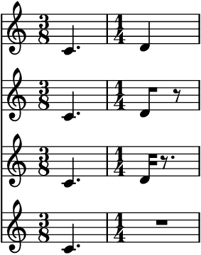- Time signature changes:
The containers can be of different length, can have different time signatures, and can contain time signature changes as well.
>>> container1 = abjad.Staff(r"\time 4/4 c'4 d'4 e'4 f'4") >>> container2 = abjad.Staff(r"\time 3/4 a2. \time 4/4 c'4") >>> container3 = abjad.Staff(r"\time 5/4 g''1 ~ g''4") >>> container4 = abjad.Staff(r"\time 6/8 c'2") >>> abjad.show(container1)

>>> abjad.show(container2)
>>> abjad.show(container3)
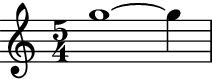>>> abjad.show(container4)
>>> containers = [container1, ... container2, ... container3, ... container4, ... ] >>> auxjad.mutate.sync_containers(containers) >>> abjad.show(container1)

>>> abjad.show(container2)

>>> abjad.show(container3)

>>> abjad.show(container4)

- Polymetric notation:
It’s important to note that LilyPond does not support simultanoues staves with different time signatures (i.e. polymetric notation) by default. In order to enable it, the
"Timing_translator"and"Default_bar_line_engraver"must be removed from theScorecontext and added to theStaffcontext. Below is a full example of how this can be accomplished using Abjad.>>> container1 = abjad.Container(r"\time 4/4 c'4 d'4 e'4 f'4") >>> container2 = abjad.Container(r"\time 3/4 a2. \time 4/4 c'4") >>> container3 = abjad.Container(r"\time 5/4 g''1 ~ g''4") >>> container4 = abjad.Container(r"\time 6/8 c'2") >>> containers = [container1, ... container2, ... container3, ... container4, ... ] >>> auxjad.mutate.sync_containers(containers) >>> staves = [abjad.Staff([container1]), ... abjad.Staff([container2]), ... abjad.Staff([container3]), ... abjad.Staff([container4]), ... ] >>> score = abjad.Score(staves) >>> lilypond_file = abjad.LilyPondFile.new() >>> score_block = abjad.Block(name='score') >>> layout_block = abjad.Block(name='layout') >>> score_block.items.append(score) >>> score_block.items.append(layout_block) >>> lilypond_file.items.append(score_block) >>> layout_block.items.append( ... r''' ... \context { ... \Score ... \remove "Timing_translator" ... \remove "Default_bar_line_engraver" ... } ... \context { ... \Staff ... \consists "Timing_translator" ... \consists "Default_bar_line_engraver" ... } ... ''') >>> abjad.show(lilypond_file)
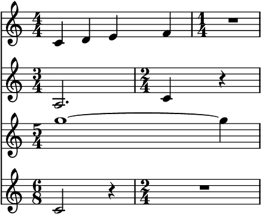
Error
If one or more containers is malformed, i.e. it has an underfilled measure before a time signature change, the function raises a
ValueErrorexception.>>> container1 = abjad.Container(r"\time 4/4 g'1 | f'4") >>> container2 = abjad.Container(r"\time 5/4 c'1 | \time 4/4 d'4") >>> auxjad.mutate.sync_containers([container1, container2]) ValueError: at least one 'container' is malformed, with an underfull measure preceding a time signature change